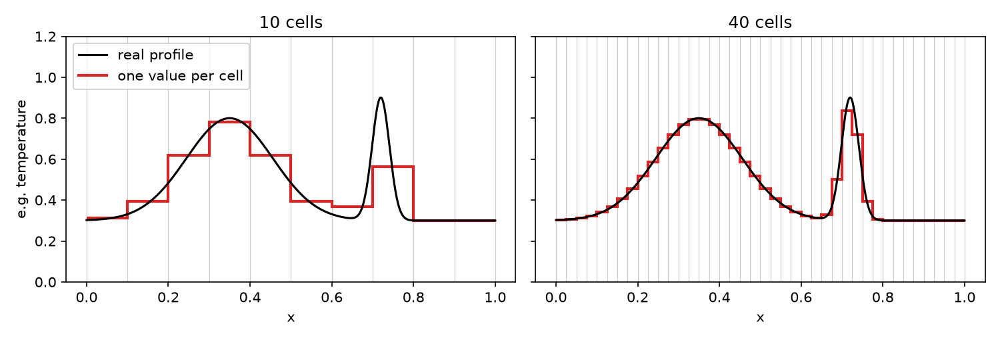

Meshes and time steps in a nutshell
In the first lecture, you ran a model without worrying about how OpenFOAM computes the solution. Before we set up our own models, we need two basic ideas: the mesh and the time step. You will set both in every model you make. Here we only build an intuition; how the solver actually computes the solution comes later in the course (FVM and OpenFoam).
The mesh
The equations we solve, e.g. for heat conduction or fluid flow, describe how a quantity like temperature or velocity changes at every point in space. A computer cannot handle infinitely many points. Instead, we cut the model domain into many small boxes, the cells. All cells together are called the mesh.
The most important thing to remember is: the solver knows only one value per cell. This value is the average over the cell. Everything that happens on a scale smaller than a cell is invisible to the model.

Fig. 3 A temperature profile represented on a coarse mesh (left) and on a finer mesh (right). With 10 cells, the broad anomaly is captured roughly, but the narrow peak is almost lost. With 40 cells, both are represented well.
This has some consequences:
Features need several cells to be resolved. A narrow peak that is smaller than a cell is smeared out over that cell, or lost completely.
More cells give more accurate results, but the model needs more memory and takes longer to run.
The number of cells grows quickly: 100 cells in each direction are 10,000 cells in 2-D, but 1,000,000 cells in 3-D.
You have already seen two meshes: the flange in lecture 1, whose mesh was made with another program and has cells of different shapes and sizes, and the cavity in this lecture, whose mesh we make ourselves with blockMesh: a square cut into 20 × 20 equal cells. The cell size is then simply \(\Delta x = L / n\), the length of the domain divided by the number of cells.
Time steps
Most of our models change with time: a fluid starts to flow, or an intrusion cools down. The solver cannot compute the solution continuously in time either. Instead, it advances in small time steps of size \(\Delta t\), a bit like the frames of a film: starting from the initial conditions, it computes the new values in all cells from the values of the previous time step, then takes the next step, and so on until the end time.
In OpenFOAM, the time stepping is set in system/controlDict. Three entries are easily confused:
Entry |
Meaning |
Cavity example |
|---|---|---|
|
Time step of the solver |
0.005 s |
|
When the run stops |
0.5 s, i.e. 100 time steps |
|
How often results are saved to disk. With |
every 20 time steps, i.e. every 0.1 s |
So the solver computes many more time steps than it saves. The time step controls the accuracy and stability of the solution; the write interval only controls how many snapshots you can look at in ParaView.
Mesh and time step belong together
The time step cannot be chosen independently of the mesh. In a flowing fluid, the rule of thumb is: in one time step, the fluid should not move further than one cell. This is measured by the Courant number
where \(U\) is the flow velocity. \(Co\) should be smaller than 1. If the time step is too large, the results become inaccurate or, even worse, the solution becomes unstable: it starts to oscillate and grows until the values are meaningless.
This also means that a finer mesh is expensive twice: if you halve the cell size, you get more cells and you have to halve the time step. In 2-D, this makes the run about 8 times longer, in 3-D about 16 times.
Try it yourself
Download the notebook
meshes_and_time_steps.ipynb. Your browser probably saves it in your Downloads folder.Move the file into the folder
HydrothermalFoam_runsin your course folder, so that the container can see it.Make sure the container is running (
docker compose up -din your course folder), and open JupyterLab in your browser: http://localhost:8888In the file browser on the left of JupyterLab, double-click on
meshes_and_time_steps.ipynbto open it.Click into the first cell and press SHIFT + ENTER. This runs the cell and moves to the next one. Go through the notebook cell by cell this way: read the text cells, run the code cells, and look at the plots.
To try another value, change the number in a code cell and run that cell again with SHIFT + ENTER.
Tip
Instead of moving the file in step 2, you can also upload it in JupyterLab with the Upload Files button (arrow pointing up) at the top of the file browser.
The notebook moves a pulse with a constant velocity through a 1-D domain, a much simpler problem than the ones we solve in OpenFOAM, but with the same effects. You only change two numbers: the number of cells and the time step. Work through the questions in the notebook; it takes about 20 minutes.
What you should take away
The solver knows only one value per cell: features smaller than a few cells are smeared out or lost.
The solver advances in time steps (
deltaT); saving results (writeInterval) is a separate setting.Time step and cell size belong together: keep the Courant number below 1. Smaller cells need smaller time steps.
You will meet all of this again in the cavity flow exercises of this lecture.